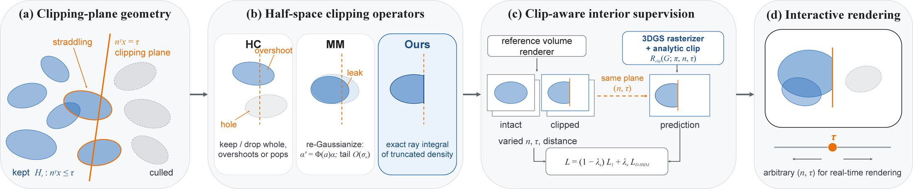
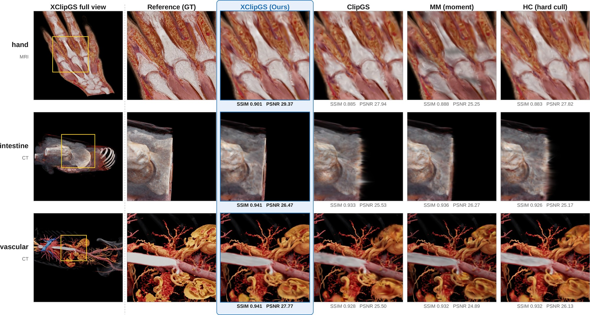

Gaussian-splatting proxies enable interactive rendering of volumetric medical scans, but a clipping plane exposes anatomy not constrained by external-view training and intersects primitives that conventional splatting can only keep or drop whole. XClipGS (eXact Clipping) treats these as two separate problems: the render-time clip operator and supervision of the hidden interior.
Under the affine EWA model, each half-space-restricted Gaussian's ray integral factorizes exactly into its ordinary 2D footprint and a conditional Gaussian CDF whose argument is affine in pixel coordinates — a closed-form, differentiable per-splat operator with no learned clipping parameters or auxiliary network. The same operator supervises the interior from multi-distance reference views with varied plane axes and offsets, and a paired clipped/unclipped protocol scores the cut face where global image metrics are nearly blind.
On eight CT and MRI volumes with held-out planes, XClipGS attains the highest PSNR on every volume (33.56 vs. 32.34 dB for ClipGS) at over 650 FPS (vs. 278), raises average band SSIM from 0.809 to 0.860, and leaks roughly 41× less. It stays best on all four cut-face metrics for arbitrary-normal planes without retraining, and on a fixed interior it matches RaRa's face fidelity with about 16× less leakage.

Each straddling splat's truncated ray integral = its unclipped EWA footprint × a Gaussian CDF Φ(kⁿδ + h) — closed form, differentiable, no learned parameters.
Renders the truncated density itself — sharp cut, hard-cull speed, exact gradients.
Best-fitting Gaussian per straddling splat — a soft tail still leaks past the plane.
Keeps or drops whole primitives — overshoots, holes, and popping as the plane sweeps.
Live recordings on the same held-out scan (intestine, CT). Watch the culled side:
XClipGS keeps it empty; ClipGS leaks and flickers.
A WebGL splatting scene with a movable plane: switch among Ours / MM / HC live and watch hard-cull popping, the moment-matched tail, and the analytic boundary. Runs fully in your browser.
Eight CT/MRI volumes, held-out plane offsets. MM and HC share our backbone, isolating the operator; ClipGS is the system-level baseline.
| Method | PSNR↑ | SSIM↑ | LPIPS↓ | FPS↑ |
|---|---|---|---|---|
| XClipGS (Ours) | 33.56 | .960 | .075 | 655 |
| ClipGS | 32.34 | .954 | .081 | 278 |
| MM (moment-matched) | 33.29 | .959 | .075 | 631 |
| HC (hard cull) | 33.14 | .957 | .077 | 658 |
Cut-face metrics score the plane itself. XClipGS is best on all four metrics for both plane sets — including arbitrary-normal planes without retraining.
| Plane set | Method | band SSIM↑ | CDEg↓ | CDEp↓ | Leak↓ |
|---|---|---|---|---|---|
| Voxel-axis held-out offsets |
XClipGS (Ours) | .860 | 22.7 | 17.9 | 0.40 |
| ClipGS | .809 | 33.4 | 19.5 | 16.42 | |
| MM | .853 | 23.6 | 18.4 | 6.18 | |
| HC | .819 | 29.4 | 18.5 | 12.54 | |
| Arbitrary-normal no retraining |
XClipGS (Ours) | .874 | 23.5 | 14.3 | 0.13 |
| ClipGS | .844 | 35.9 | 15.7 | 17.24 | |
| MM | .870 | 25.5 | 15.1 | 5.67 | |
| HC | .842 | 35.9 | 14.9 | 18.30 |
CDE = difference-referenced cut error at the grazing edge (g) / over the exposed face (p); Leak = culled-side leaked energy. Errors and Leak are ×10−2; bold = best per block. On a fixed interior, swapping only the render-time rule, XClipGS also beats RaRa Clipper with ~16× less leakage (see paper, Table 3).

Held-out planes, matched cameras and crops (middle row: an unseen arbitrary-normal grazing view). XClipGS keeps cut-face structure without the diffuse or jagged boundaries of the approximations; per-crop SSIM/PSNR below each patch.
@article{gao2026xclipgs,
title={XClipGS: Exact Half-Space Clipping for Medical Volume Gaussian Splatting},
author={Gao, Zhongpai and Planche, Benjamin and Zheng, Meng and Choudhuri, Anwesa
and Zhou, Chaoyi and Chen, Terrence and Wu, Ziyan},
journal={arXiv preprint arXiv:2608.07760},
eprint={2608.07760},
archivePrefix={arXiv},
primaryClass={cs.CV},
year={2026}
}